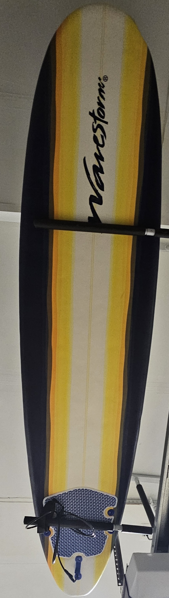
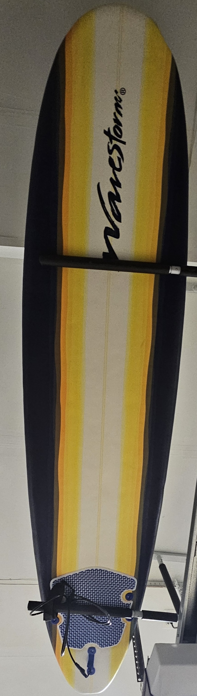

Share Your Journey or Setup!
Welcome to the heart of our extreme sports community! This page is all about capturing the adventure, adrenaline, and artistry of movement. Whether you’re catching your first wave or summiting your first rock wall, these visuals tell the story of where we've been—and where we're going.
We've curated two collections: one showing the raw gear and boards that define our sports, and another that captures the living moments—people mid-action, celebrating, failing, or flying. These images invite you to see, feel, and maybe someday contribute your own story.
David's Gear
This section shows the personal boards and skates used by David over the years.
 



These items represent years of activity across multiple sports—each with wear, stories, and miles behind them.
- Sports: Skateboarding, Surfing, Roller Skating, Snowboarding
- Characteristics: Personal gear, used terrain, design evolution
David In Action
Here we highlight moments in motion—capturing terrain, skill, and spontaneity. These aren’t posed—they’re lived.


These snapshots document excitement, calm, risk, and joy—from mountaintops to motorsports.